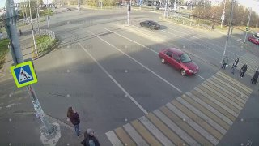
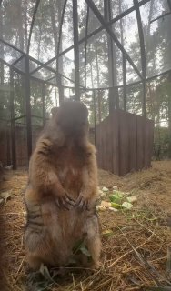
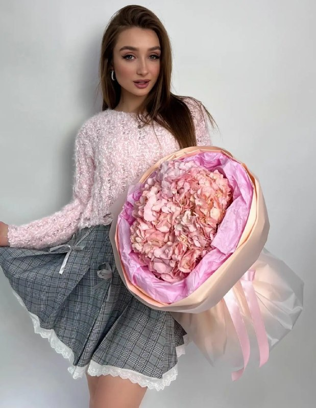
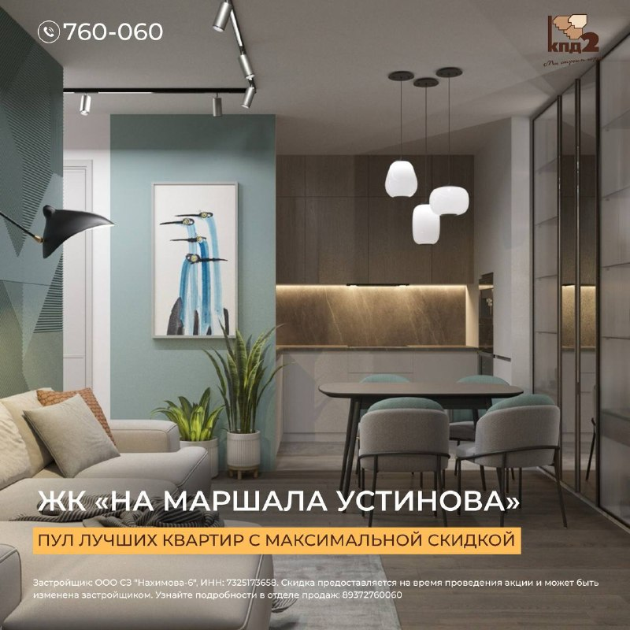
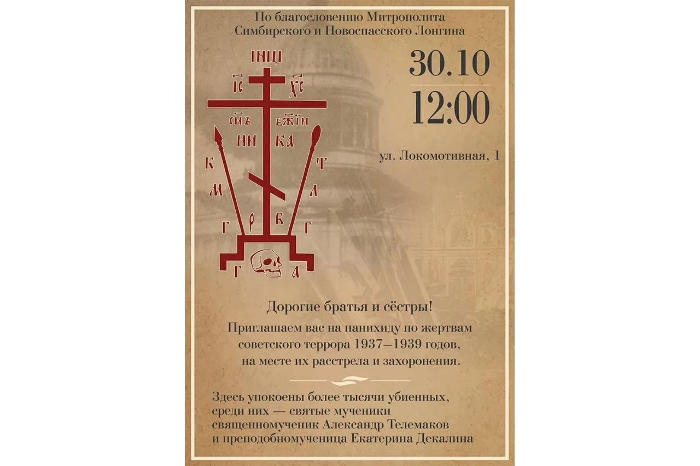
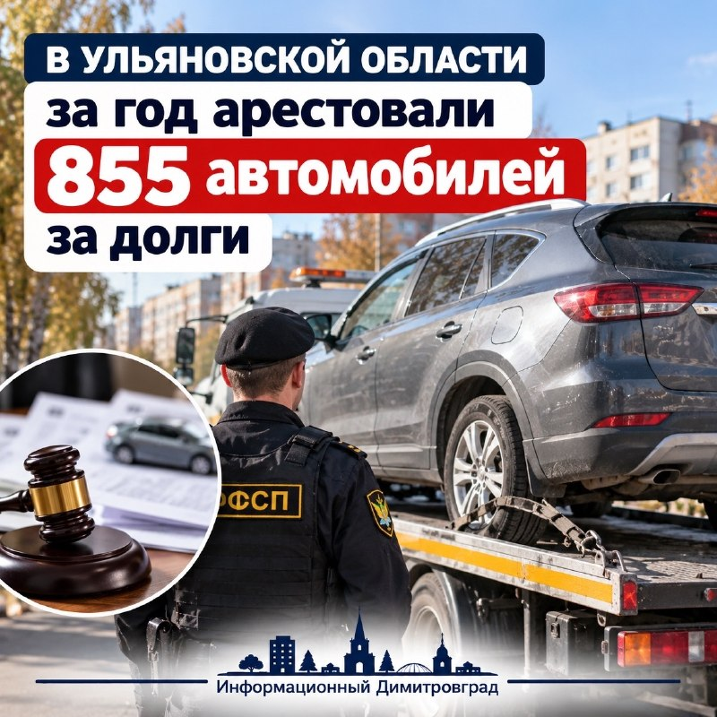
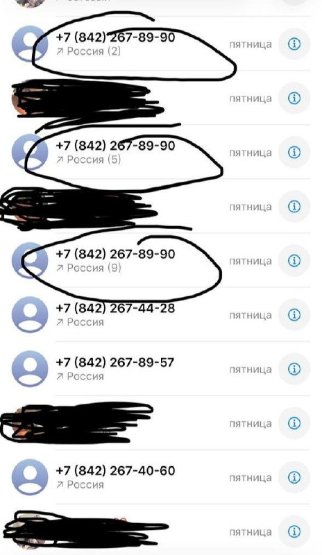

Трудоспособным — 19 622 рубля, детям — 17 462, пенсионерам — 15 482. В среднем по области — 18 002.…
Трудоспособным — 19 622 рубля, детям — 17 462, пенсионерам — 15 482. В среднем по области — 18 002. Заживем.
НовостьПо данным источника

Трудоспособным — 19 622 рубля, детям — 17 462, пенсионерам — 15 482. В среднем по области — 18 002. Заживем.

Колледжи» Выпуск посвящён беспилотным летательным аппаратам — одной из самых передовых специальностей.…

Денег в бюджете нет, заявил сегодня в Заксобрании министр транспорта Евгений Лазарев.…


Авария произошла 24 октября в 22:15 на 284-м километре подъезда к Ульяновску от трассы М-5 «Урал», сообщили в Госавтоинспекции.…


Как пишет Telegram-канал Косаринова, причиной проблемы жильцы называют утечку горячей воды на наружной теплотрассе.…

Мало того , что за 48 рублей мы стоим и ждем по 30 минут нужный автобус , многие водители стали отказывать в переводе средств на карту , телефон , так же у них нет перевода по кьюар-коду .…

Как сообщает Telegram-канал Косаринова, жильцы 11-подъездной многоэтажки обратились за помощью к губернатору Алексею Русских.…

📍 В этот день вы сможете лично обратиться к специалистам структурных подразделений Администрации города и получить консультации по вопросам предоставления муниципальных услуг в электронном виде.…

Дом, где проживала заявительница, был признан аварийным и подлежащим сносу еще в апреле 2017 года, однако расселение так и не произошло.…

По данным регионального УМВД, сотрудница попыталась его остановить, однако он скрылся. Ущерб превысил 7 тысяч рублей.…

Молодой человек забрал неоплаченные джинсы и свитер на сумму более 7 тысяч рублей и скрылся, сообщили в региональном УМВД.…


Открытие трасс запланировано на зимний сезон.…

Полотна выпускницы Симбирской гимназии «ДАР» имени Александра Невского презентовали на престижной площадке Carrousel du Louvre в Париже.…

Сеть наружного освещения расширят и распределят нагрузку. Все работы он поручил завершить в ноябре.…

По данным регионального Роспотребнадзора, показатель заболеваемости составил 74,06 случая на 10 тысяч жителей, что на 20,18% ниже среднемноголетнего уровня.…

В Ульяновской области со 2 ноября полностью отменили восемь пригородных поездов.…


В это время они почти не двигаются и не едят, а температура тела и частота сердечных сокращений значительно снижаются.…

ДТП произошло в 13:30 на 275-м километре трассы «Казань — Буинск — Ульяновск — подъезд к Самаре», сообщили в Госавтоинспекции.…

Участвовать может абсолютно каждый — бесплатно! Розыгрыш в закрепе 🌸 🫶 Делимся ссылкой — @allenbuketflowers Подробности у продавцов салона. Реклама.…

Мероприятие организовало АНП «Росинка» при поддержке депутатов городской думы от партии «Единая Россия».…

🎉 Желаем крепкого здоровья, ярких матчей в жёлто-чёрной форме, эффектных отборов, голевых действий и новых побед вместе с командой!…

руководителя Агентства по регулированию цен и тарифов Иван Карсаков. 73online поздравляет именинника!

🏆 КПД-2 продлевает акцию со скидкой до 800.000₽ — отличный шанс забрать свой идеальный вариант по сниженной стоимости, пока предложение еще действует.…

Обращение опубликовал Telegram-канал «Симбирский шугожор». Автор жалобы рассказал, что на остановке «Солнышко» автобус ожидали около 30 человек.…

Богослужение начнется в 12:00 рядом с домом № 1 на улице Локомотивной, сообщили в Симбирской епархии.…

Чаще всего машины арестовывали по производствам о взыскании кредитов и неуплате налогов. Как это работает?…

Позвонила в дежурную часть и спросила, как записаться на прием к начальнику ОМВД.…
Всего в 2026 году по нацпроекту «Инфраструктура для жизни» в Ульяновске обновляют девять участков дорог.…

В Ульяновске на девяти участках дорог выполнили все асфальтовые работы, сообщил Болдакин.…
Ничего по этому фильтру в ленте нет — показать все материалы.
Возник 06.10, пик 23.10 — сюжет держали 22 источника. Полная дуга — в недельнике.